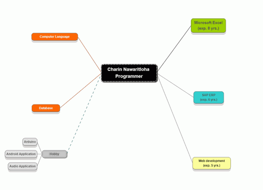

เกี่ยวกับผู้เขียน
- ชื่อ ชรินทร์ นวฤทธิ์โลหะ
- ชื่อเล่น เพียว / เป็ด
- อายุ ปี
- จบการศึกษาจาก มหาวิทยาลัยธรรมศาสตร์ ปริญาตรี วิทยาศาสตรบัณฑิต (ศาสตร์คอมพิวเตอร์) เมื่อ ปี พ.ศ.2544 (จบมาแล้ว ปี)
ประวัติการทำงาน
- 2 ปี นักวิชาการคอมพิวเตอร์ ประจำอยู่คณะวิทยาศาสตร์ มหาวิทยาลัยเกษตรศาสตร์ หน้าที่ดูแลเว็บไซต์ของคณะ เขียนเว็บด้วย PHP เก็บข้อมูลด้วย MySQL และประสานงานกับศูนย์คอมพิวเตอร์กลางของมหาวิทยาลัย
- 2 ปี เว็บโปรแกรมเมอร์ ออกแบบและสร้างเว็บอีคอมเมิร์ซเพื่อขายหินสวยงามจากพม่า เขียนเว็บด้วย PHP และ JavaScript เก็บข้อมูลด้วย MySQL
- 2 ปี โปรแกรมเมอร์อิสระ เน้นไปทางสร้างเว็บไซต์ รับจ้างด้าน IT ทั่วไป
- 7 ปี เจ้าหน้าที่สนับสนุนด้านไอที และโปรแกรมเมอร์ ประจำบริษัท สีลมการแพทย์ (ปัจจุบันถูกซื้อโดย TEVA Pharmaceutical Industries Ltd.) ดูแลระบบอินทราเน็ต เว็บไซต์ใช้ภายในและของบริษัท ให้การสนับสนุนผู้ใช้งานเกี่ยวกับ SAP Excel และ VBA โดยจะเน้นไปทางแผนกบัญชีและแผนกขายเป็นหลัก
- พ.ศ.2559 จนถึงปัจจุบัน ( ปี) เป็นโปรแกรมเมอร์อิสระ เน้นไปทาง Excel/VBA ใช้ประสบการณ์ 6 ปี จากการเขียน Excel เพื่อใช้งานกับ SAP ของแผนกบัญชี
ทักษะที่โดดเด่น
- Microsoft Excel
- Excel VBA
- SAP (SD Module)
- php
สามารถคลิกดูทักษะทั้งหมดในรูปแบบของ Graph ด้านล่าง
Social Network
- Personal Facebook
- Facebook Page เป็ดตามสั่ง, โปรแกรมเมอร์ไปเที่ยว